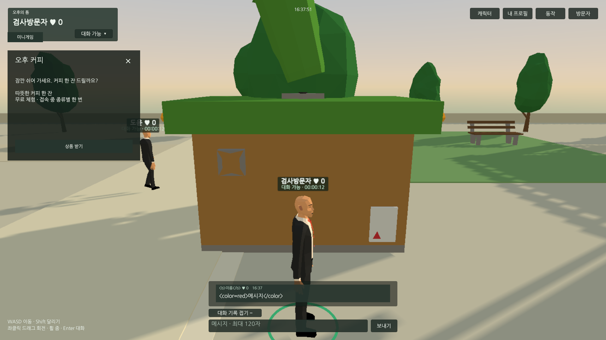
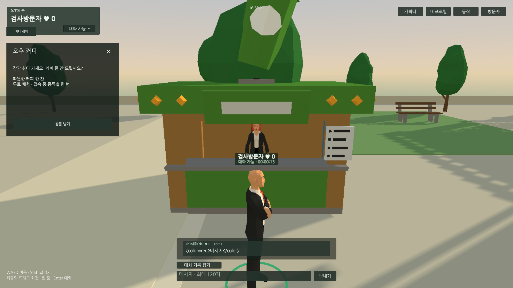
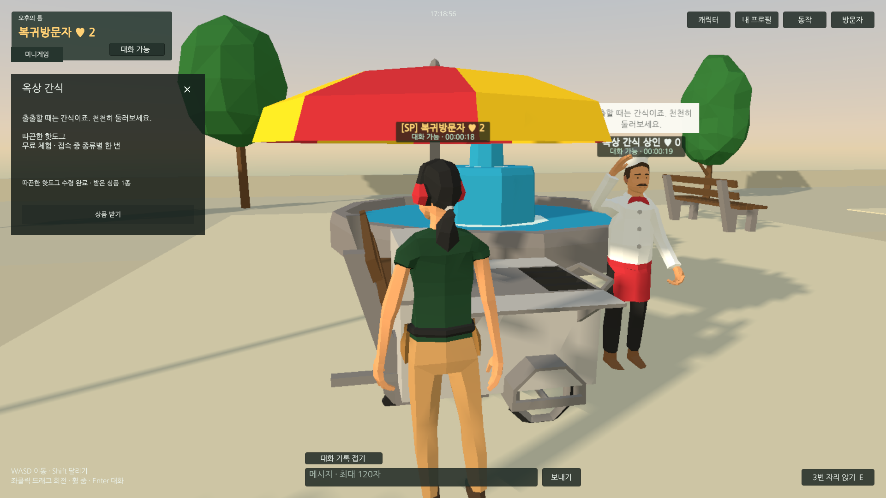
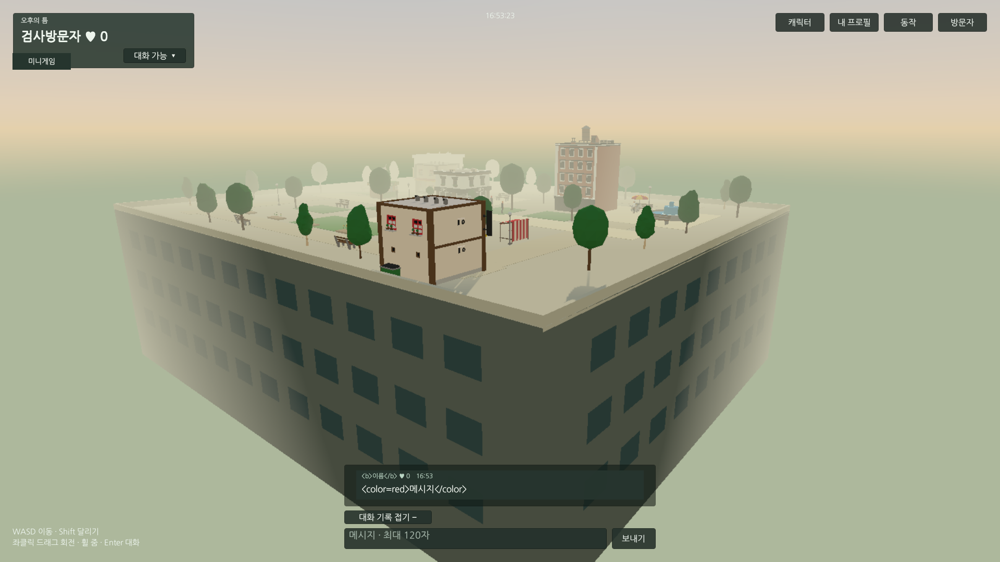

Tracefolio REPORTS & ISSUES
Tracefolio REPORTS & ISSUES가판대3구역·고정 상인 적용과 최종 웹 QA
검증 대기커피·꽃·핫도그 가판대와 상인3명 적용. 최신 웹에서 수령·멀티/게임·0/4/6/12명 성능·복귀를 확인하고 임시 도구를 정리했습니다.
작업 결과
가판대3곳의 클릭 접근·고정 상인·무료 상품 수령을 구현했습니다. Play107개, 서버11개, 두 브라우저 기능37개 및 재접속/가판대/성능28개 검사를 확인했습니다. 최종 로컬 서버가 검증한 웹 산출물을 제공하며 실제 파일 해시도 대조했습니다.
변경 내용
적용 내용
- 커피·꽃·핫도그 매대와 고정 상인3명. 배회 보충 인원과 별도이며 이동 경로 컨트롤러가 없습니다. 매대/상인 클릭 접근 후 상품 창과 서버 수령을 연결했습니다. 상품은 무료 체험이며 접속 중 종류별1회입니다.
- 원본 polyperfect를 수정하지 않고 프로젝트 씬 인스턴스·공유 URP 머티리얼·기존 Character 계층을 사용했습니다.
- 기존 이동/TPS·벤치·멀티·대화/차단/신고·좋아요·간편 프로필·스폰서·이미지판·공동 게임5종을 유지했습니다.
- 추가 QA 수정: 빙의 전 UI null 방어, 개인 사진/소개/링크의 잔여 DTO/API 제거, 성능 비교 인원 유지/자동 복귀. 빌드 메뉴와 기본 서버의 출력 폴더도 통일했습니다.
적용 중 발견한 매대 역방향을 수정했습니다. 같은 Unity1920×1080·같은 카메라 위치에서 상인이 가려지던 전·후입니다.
 
최신 실제 Chrome에서 핫도그 상품 수령을 확인했습니다.

옥상 아래에는 외벽과 창문을 결합 메시로 추가했습니다. 아래는 실제 게임 카메라의 QA 관찰 시점입니다.

검증
- Unity6000.0.83f1 실제 Play107개 통과, 오류/경고0, 사용자 저장값 복원. 상인 고정·3구역 접근 지점·상품 창·카메라/착석·얼굴16종·비행·숨김/복귀 포함.
- Node 실제 HTTP/게임 검사11개 통과. 상품 종류별 수령·중복/연속 제한·신고 저장·좋아요/이미지 재시작 보존·권한 위조·1초 경계·서버 점수 판정 확인.
- Chrome156 / Edge156 두 실제 접속에서37개 기능 검사가 통과했습니다. 마지막 재접속 카운터를 첫 스냅샷 전에 읽던 검사는 대기 조건을 보완하고 후속28개 검사에서 비영점 좋아요 보존까지 재검증했습니다. 이전 실패 JSON을 보존했습니다.
- 후속 웹28개: 3가판대 실제 마우스 접근/수령, 비영점 좋아요 재접속, 인원 비교, 실제 탭 숨김/복귀, 비행, 예외0 통과. 멀리 가려진 매대는 통로 접근 후 확인했습니다. QA 투영의60도 가정을 실제 씬55도로 수정한 근거도 보존했습니다.
아래는 실제1명·고정 상인3명·명시한 배회 AI 조건에서 각12초 측정한 값입니다. 목표는30FPS·p95 55ms 이하였습니다.
| 배회 AI | 중앙 FPS | p95 프레임 | CPU/한 코어 | 관리 메모리 | 경로 요청 |
|---|---|---|---|---|---|
| 0 | 30.0 | 34ms | 9.67% | 3.21MiB | 0.00/s |
| 4 | 30.0 | 34ms | 10.78% | 3.17MiB | 0.26/s |
| 6 | 30.0 | 34ms | 11.42% | 3.25MiB | 0.52/s |
| 12 | 30.0 | 34ms | 13.12% | 3.75MiB | 0.60/s |
전용 Chrome 프로세스군 합산 작업 집합은 약861931MiB, private 합계는 약662671MiB였습니다. 공유 페이지 중복이 가능한 브라우저군 합산값이며 관리 메모리나 게임 단독 메모리와 구분합니다. 실제 숨김8초 구간 CPU는 0.29%/한 코어였고, AI 중단·이동 정지·복귀 재개를 확인했습니다. GPU 전용 메모리는 측정하지 않았습니다.
- 최종 웹 빌드25,060,667bytes 성공. 제공 서버의6개 파일 SHA256이 확정 산출물과 모두 일치합니다. 최신 Runtime46개 파일 해시도 정리 전후 동일합니다.
- 씬 저장됨(dirty=false), 누락 스크립트0·버튼 연결 오류0·상인3명·버튼76개 검사 통과. 임시 Editor5개와 meta는 QA 보관본 후 제거했고 Runtime/Editor 컴파일을 다시 통과했습니다. 실제 Unity Console 오류0·저장 표시도 확인했습니다.
- 전용 QA 브라우저·4191/9398/9399·자동 드라이버 종료, QA 프로필 정리. 사용자가 열어 둔 앱은 보존하고 플레이용4190 서비스만 유지했습니다.
- 교훈: 좌표 투영은 실제 FOV 근거를 확인하고, 비동기 상태는 도착 조건으로 검사합니다. 프로젝트 지침에 빙의 전 null 방어·인원 비교 복귀·고정 상인/프로필 정책을 반영했습니다. 기존 공통 검증/생명주기 규칙과 중복되어 전역 지침 변경은 없습니다. 이미지 편집은 하지 않고 실제 원본 PNG를 보존했습니다.
남은 사항
요청한 기능 적용과 위 범위의 최종 QA는 완료했습니다. 외부 인터넷 호스팅·동시24명 부하·장기간 내구성·유료 결제/인증 계정·Docker 실행은 이번 로컬 시제품 검증 범위 밖이며 검증 완료로 표시하지 않습니다. 채팅 순화는 사용자 예시 기반 편집 표이며 메이플 공식 전체 사전과 동일함은 미확인입니다. 현재는 이 보고서의 공개 배포·첨부 확인과 최종 메뉴얼 등록만 남았습니다.
작업 시간
- 제안 시간: 이번 재개25
40분. 가판대 시야/좌표·재접속 QA 보완으로 추가510분 안내. 앞선 작업 최초90~150분 후 기능 추가에 따른 예상 변경은 이전 기록에 보존. - 실제로 완료된 시간: 재개2026-11-04 16:35:18 KST → 구현·QA·정리 완료17:24:44 KST,49분26초. 최초 제안 상한40분보다9분26초 초과. 공개 보고 확인/메뉴얼 최종 등록 시간은 후속 최종 기록에 추가합니다.
- XERJ: 미사용 — XERJ MCP/검색 스크립트 미제공. rg·현재 소스/설정·실제 실행으로 검증.